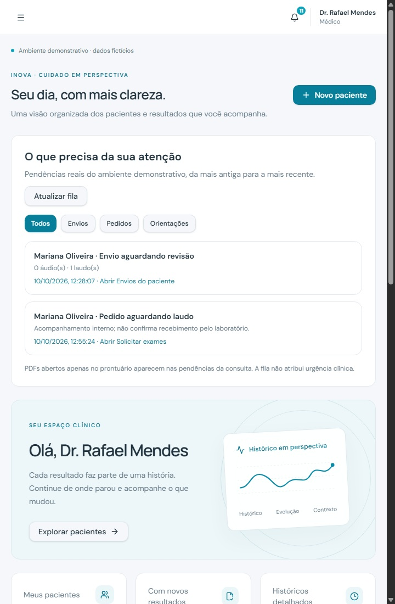
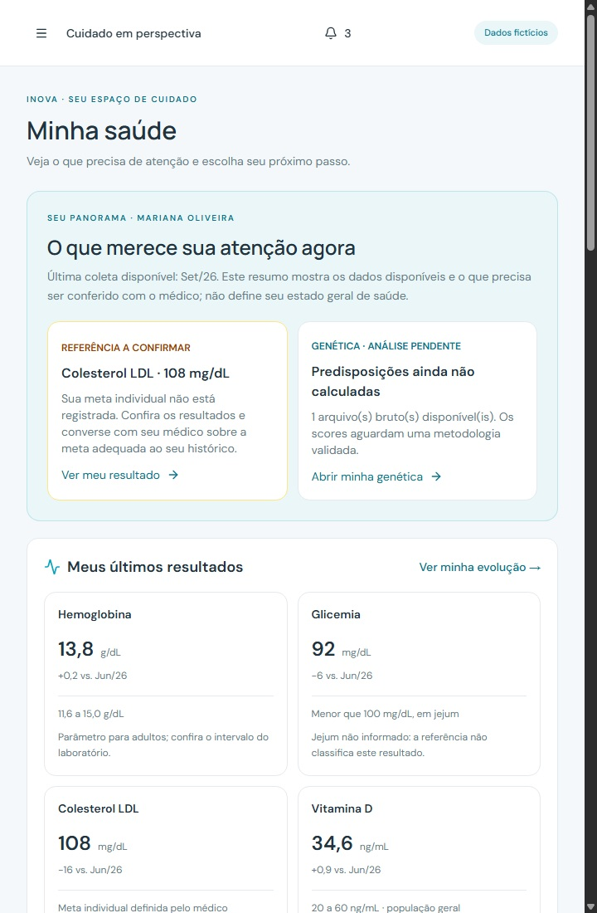

DOIS PORTAIS. CUIDADO CONECTADO.
Conheça o INOVA
por dentro.
✧ COM INTELIGÊNCIA ARTIFICIAL
INOVA MÉDICO

INOVA PACIENTE

AGENDA · LAUDOS · RESULTADOS · IA
Da preparação da consulta
ao acompanhamento.Interface demonstrativa · Dados fictícios